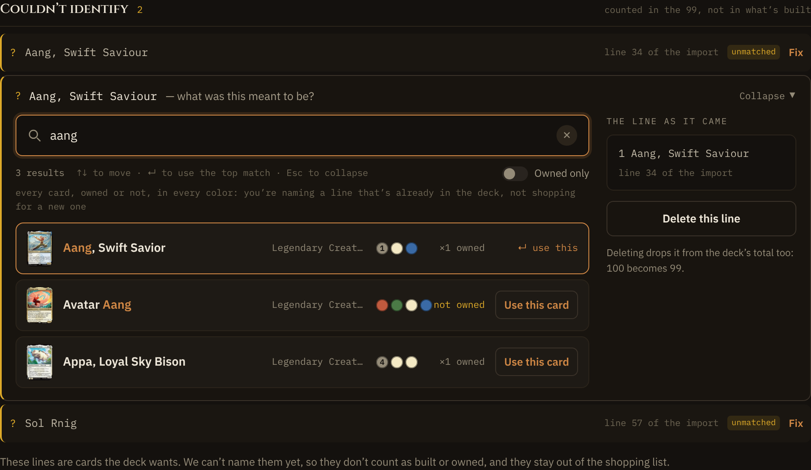
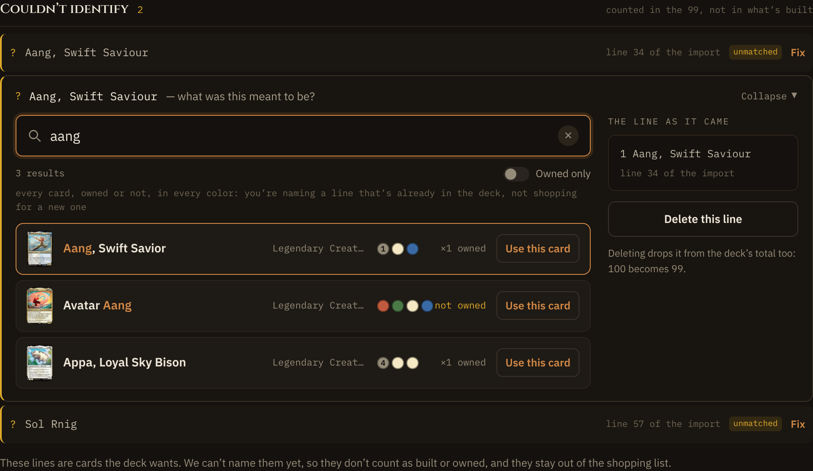

Deck import · addendum · phone Use · R1
Desktop and touch tablet
Desktop (1100, fine pointer) is unchanged: both frames are the same image. A touch tablet (1024, coarse pointer) is the one place above md that changes.
Desktop · main · 1100

↵ use this on the active row, the keyboard hint under the field.
Desktop · P1 · 1100

Identical.
Touch tablet · main · 1024, coarse
A keyboard caption and hint on a device that may have no keyboard.
Touch tablet · P1 · 1024, coarse

“Use this card” on the active row; the hint is screen-reader only.